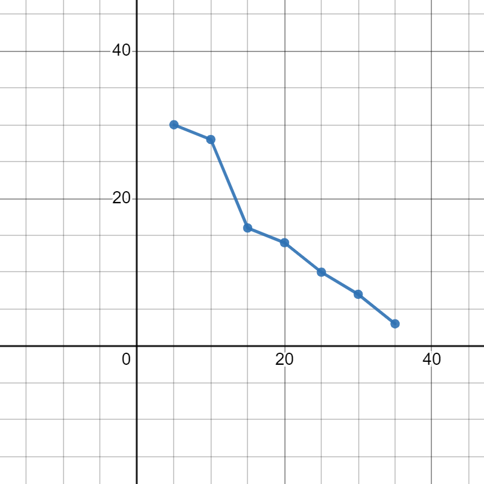
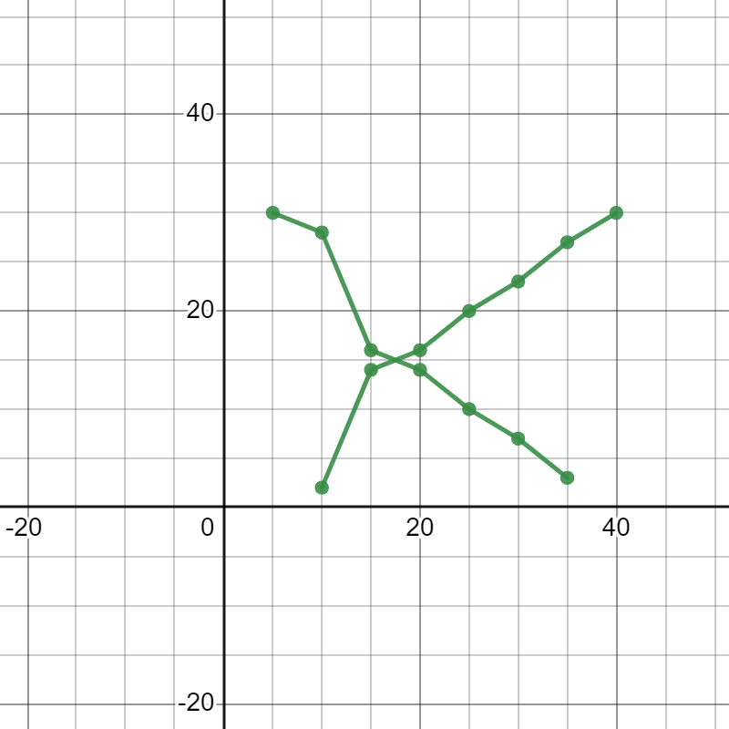

| Profit(in lakhs) | Number of shops(frequency) |
|---|---|
| More than or equal to 5 | 30 |
| More than or equal to 10 | 28 |
| More than or equal to 15 | 16 |
| More than or equal to 20 | 14 |
| More than or equal to 25 | 10 |
| More than or equal to 30 | 7 |
| More than or equal to 35 | 3 |
Solution : We first draw the coordinate axes, with lower limits of the profit along the horizontal axis, and the cumulative frequency along the vertical axes. Then, we plot the points (5, 30), (10, 28), (15, 16), (20, 14), (25, 10), (30, 7) and (35, 3). We join these points with a smooth curve to get the more than ovive, as shown in the figure below
Now, let us obtain the classes, their frequencies and the cumulative frequency from the table above.
| classes | 5-10 | 10-15 | 15-20 | 20-25 | 25-30 | 30-35 | 35-40 |
| Number of shops | |||||||
| Cumulative Frequency |
Using these values, we plot the points (10, 2), (15, 14), (20, 16), (25, 20), (30, 23), (35, 27),(40, 30) on the same axes as in last figure to get the less than ogive, as shown in figure below.
The abcissa of their point of intersection is nearly 17.5, which is the median. This can also be verified by using the formula. Hence, the median profit (in lakhs) is ₹17.5
